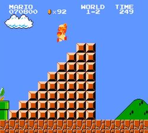
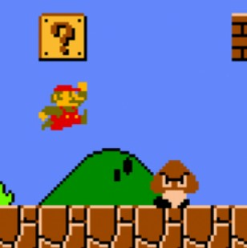

HOME
-
GAMEPLAY
-
HISTORY
-
WALLPAPERS
-
CONTACT US
Play the Super Mario Bros game online!
You can select any level out of 32 or generate a random map. Enjoy the game!
Use
W
,
A
,
S
,
D
keys or arrows
[
↑ → ↓ ←
]
to move Mario, to jump higher hold the button.
Use
Shift/CTRL
to Fire/Sprint.
P
- pause,
M
- mute.
History
Few video games can claim the distinction of being in the general consciousness for
decades, spanning different generations. Super Mario (🔎 wiki) is one of, if not the
only one, that has made great strides in this area.
There's almost no one on the planet who has not heard of the Italian plumber in
overalls who goes by the name of Mario. Those who have never played the game
may not be aware of his humble beginnings but they have in some shape or form,
heard of him.
Mario wasn’t even the main character in his first appearance in the video game. Most
importantly, he wasn’t even a plumber and he wasn’t called Mario. He made his first
appearance in 1981 in the pioneering arcade game called Donkey Kong. The
character was called
Jumpman
and he was a
carpenter
.
You can read more about the history and evolution of Mario
here

Gameplay

When playing, the player is assuming the role of Mario and has to go through the
Mushroom Kingdom. The player has to survive the evil forces of the game’s villain,
Bowser, and rescue Princess Toadstool. To win the game, Mario has to
reach the flag
pole
at the end of each level.
There are coins scattered throughout the game which need to be collected. There are
also
special bricks with question
marks that reveal more coins and other special
items once hit. It’s a must to hit other bricks if there’s enough time as they might
contain rare items or coins.
Eating a mushroom transforms regular Marion into Super Mario, which means he
grows double in size and gets the ability to break bricks above him. Careful though
as when he gets hit in this mode, he reverts to his original self, but he won’t die.
You can read more about the gameplay
here